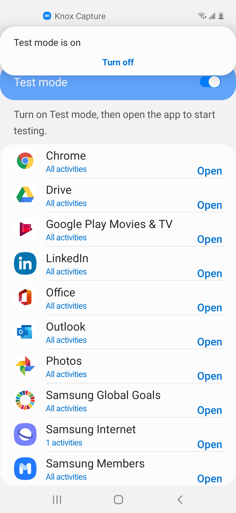
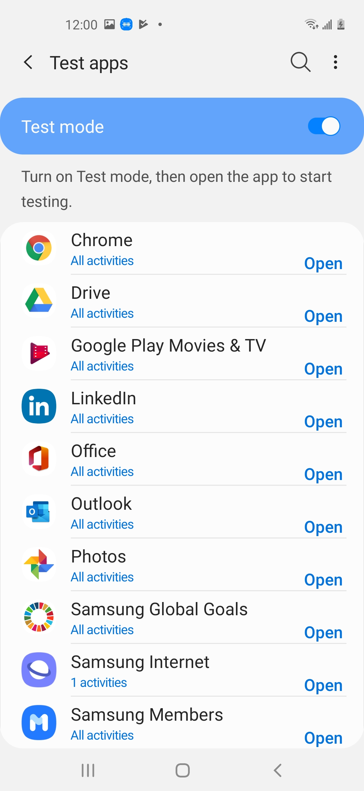
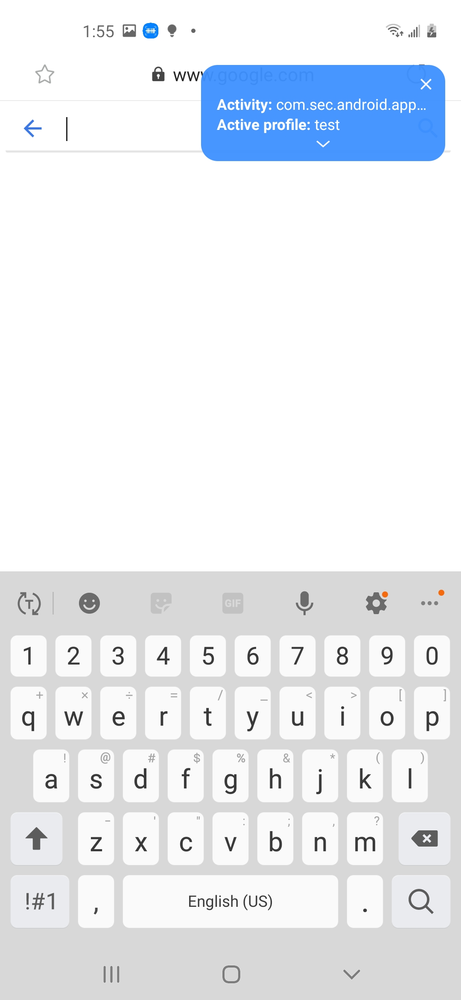
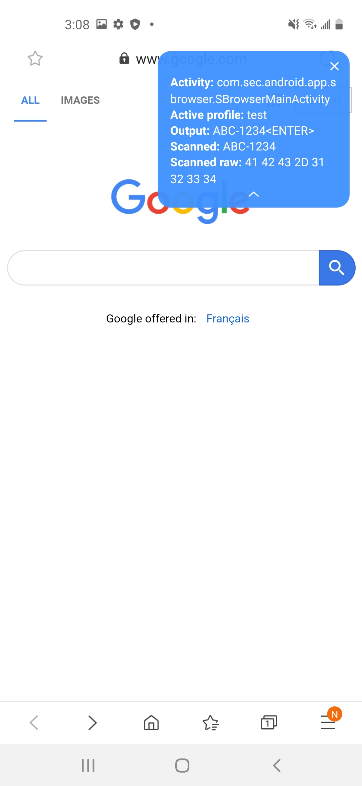
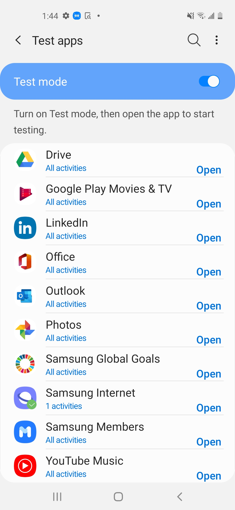
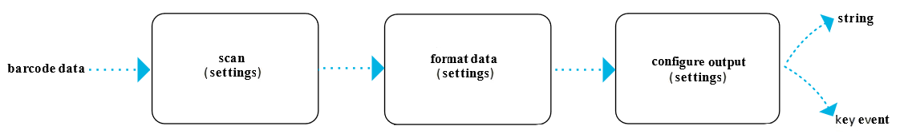

Use test mode
Last updated July 26th, 2023
Check the scanning configuration by starting Knox Capture’s system-wide test mode and launching a business app. Use test mode to visually confirm scan engine settings and keystroke output rules for each app in the configuration.
Start test mode
-
Start test mode and open the Test configuration screen in one of the following ways:
- Tap the More actions menu icon next to the Profiles label on the home screen. Select Test apps.
- Tap the Share button in the lower-right of the home screen. Then, tap the Test configuration button in the Share configuration menu.
-
After starting test mode, look for a system pop-up notification indicating Test mode is on.

Select an app to test
-
Either search for an app and tap the Open button next to it in the list on the Test apps screen, or exit Knox Capture and open the app.

-
Review the content of the blue test overlay in the open app’s UI. The overlay displays:
- Activity — The name of the activity in focus.
- Active profile — The Knox Capture profile to which the in-focus activity belongs. This is the profile defining scan settings and keystroke output rules for the in-focus activity.

Scan a barcode and view the test overlay
Each scanning experience differs depending on the configuration. For example, the camera may not automatically scan a barcode. For more information, see Scan engine settings.
-
Press the camera scan trigger to open the camera for scanning.
-
Aim the camera at the barcode to scan.
-
View the test overlay. You should see the following new values:
- Output — The processed data in test mode notation with keystroke output rules applied.
- Scanned data — The scanned barcode data in test mode notation without any keystroke output rules applied.
- Scanned raw — The scanned barcode data in hexadecimal format without any keystroke output rules applied.
-
Expand the overlay by tapping its down arrow icon for a full view of the test data.

-
Inspect and compare the Scanned data to the Output value to verify the correct keystroke output rules and scanning settings for the activity in question.
-
Repeat for each app included in the configuration as required. After testing an app, there should be a green check mark badge next to the app logo on the Test apps screen. Use this to track testing progress.

-
Tap All activities under an app to open a list of app activities that are included in the profile you’re testing. Here, you can check if individual activities were tested. If so, a green checkmark appears next to the activity.
-
Clear all the check marks by tapping the additional actions menu icon at the upper-right of the Test apps screen and selecting Clear test activity.
Exit test mode
Exit test mode in one of the following ways:
- Toggle Test mode to the off position on the Test apps screen.
- Tap the X in upper-right corner of the test overlay, then tap Exit to confirm.
In addition to the two points mentioned above, the user can also exit test mode from the notification panel.
Test mode notation
Test mode uses special notation when displaying scanned data in the test overlay to verify the keystroke output rules are set up correctly.
Character representation
- Printable ASCII or Unicode characters are represented in their native printable format. For example, “abc123” appears as “abc123” in the test overlay.
- Non-printable ASCII control characters are represented with standard abbreviation. For example, a Tab control character appears as “HT” in the test overlay.
Standard ASCII control character abbreviations
| ASCII | Hex | Name | Abbreviation |
|---|---|---|---|
| 1 | 1 | Start of Heading | SOH |
| 2 | 2 | Start of Text | STX |
| 3 | 3 | End of Text | ETX |
| 4 | 4 | End of Transmission | EOT |
| 5 | 5 | Enquiry | ENQ |
| 6 | 6 | Acknowledgement | ACK |
| 7 | 7 | Bell | BEL |
| 8 | 8 | Backspace | BS |
| 9 | 9 | Horizontal Tab | HT |
| 10 | 0A | Line Feed | LF |
| 11 | 0B | Vertical Tab | VT |
| 12 | 0C | Form Feed | FF |
| 13 | 0D | Carriage Return | CR |
| 14 | 0E | Shift Out | SO |
| 15 | 0F | Shift In | SI |
| 16 | 10 | Data Link Escape | DLE |
| 17 | 11 | Device Control 1 | DC1 |
| 18 | 12 | Device Control 2 | DC2 |
| 19 | 13 | Device Control 3 | DC3 |
| 20 | 14 | Device Control 4 | DC4 |
| 21 | 15 | Negative Acknowledgement | NAK |
| 22 | 16 | Synchronous Idle | SYN |
| 23 | 17 | End of Transmission Block | ETB |
| 24 | 18 | Cancel | CAN |
| 25 | 19 | End of Medium | EM |
| 26 | 1A | Substitute | SUB |
| 27 | 1B | Escape | ESC |
| 28 | 1C | File Separator | FS |
| 29 | 1D | Group Separator | GS |
| 30 | 1E | Record Separator | RS |
| 31 | 1F | Unit Separator | US |
Type interpretation
String
- Printable ASCII or Unicode characters aren’t modified. For example, “abc” will appear as “abc” in the test overlay.
- Non-printable ASCII control characters get embedded in curly brackets. For example, a Tab control character will appear as “{HT}” in the test overlay if sent as a string.
Key event
Printable and non-printable characters appear in their character representation embedded in angle brackets when sent as key events. For example, if sent as key events, the data abHT appears as <a><b><HT> in the test overlay.
Example
The following example applies test mode notation to scanned barcode data based on a small set of keystroke output rules.
Barcode input: abc\n123\teh
This input uses escape sequences for control characters. \n represents Enter and \t represents Tab.
Keystroke output rules:
- Send Enter as String
- Send Tab as Key event
- Send ASCII Printable characters as String
Test mode notation:
- Scanned data:
abc{LF}123{HT}eh - Output :
abc{LF}123 eh

On this page
Is this page helpful?